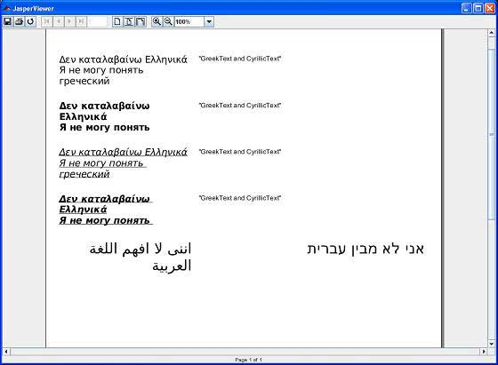

JasperReports - Unicode Support
In JasperReports, working with texts needs some dedicated tools to process both character representations and text formatting properties. Any text can be considered as a character sequence with a particular representation structure. The text appearance consists in both layout (and paragraph) and font settings. But while in most cases the text layout remains invariant, font settings may change when running the report in different Locales. We know that different languages need different character sets with respect to specific characters representation. Therefore, working with texts means working with fonts. A detailed discussion about how to use fonts in JasperReports can be found in the chapter Report Fonts.
One of the main features concerning the text content in a given report is the possibility to internationalize it. It means we can run the report in different localized environments, using different languages and other localization settings without any hardcoded modification. Character encoding is an important feature when a report is intended to be internationalized.
Character Encoding
A character is the smallest unit of writing that's capable of conveying information. It's an abstract concept, a character does not have a visual appearance. "Uppercase Latin A" is a different character from "lowercase Latin a" and from "uppercase Cyrillic A" and "uppercase Greek Alpha".
A visual representation of a character is known as a glyph. A certain set of glyphs is called a font. "Uppercase Latin A", "uppercase Cyrillic A" and "uppercase Greek Alpha" may have identical glyphs, but they are different characters. At the same time, the glyphs for "uppercase Latin A" can look very different in Times New Roman, Gill Sans and Poetica chancery italic, but they still represent the same character.
The set of available characters is called a character repertoire. The location (index) of a given character within a repertoire is known as its code position, or code point. The method of numerically representing a code point within a given repertoire is called the character encoding.
Encodings are normally expressed in terms of octets. An octet is a group of eight binary digits, i.e., eight ones and zeros. An octet can express a numeric range between 0 and 255, or between 0x00 and 0xFF, to use hexadecimal notation.
Unicode
A Unicode is a character repertoire that contains most of the characters used in the languages of the world. It can accommodate millions of characters, and already contains hundreds of thousands. Unicode is divided into "planes" of 64K characters. The only one used in most circumstances is the first plane, known as the basic multilingual plane, or BMP.
UTF-8 is the recommended encoding. It uses a variable number of octets to represent different characters.
In a JRXML file the encoding attribute is specified in the header. It is used at report compilation time to decode the XML content. For instance, if the report contains French words only and characters such as ç, é, â , then the ISO-8859-1 (a.k.a Latin-1) encoding is sufficient:
<?xml version="1.0" encoding="ISO-8859-1"?>
As seen above, ideally we can choose the encoding fit to the minimal character set which can correctly represent all the characters in the document. But in case of multilanguage documents (i.e documents containing words spelled in several languages), one should choose the encoding adapted to the minimal character set able to correctly represent all the characters in the document, even if they belong to different languages. One of the character encodings able to handle multilingual documents is the UTF-8, used as default encoding value by JasperReports.
The texts are usually kept in resource bundle files rather than within the document during internationalization. So, there are cases where the JRXML itself looks completely ASCII-compatible, but generated reports at runtime do contain texts unreadable with ASCII. As a result, for a certain type of document export formats (such as CSV, HTML, XHTML, XML, text) one has to know the encoding for the generated document too. Different languages are supported by different character encodings, so each time we need to run a report in a localized environment, we have to know which is the most appropriate character encoding for the generated document language. In this case, the encoding property defined in the JRXML file itself might be no more useful.
To solve this kind of issues an export custom property : net.sf.jasperreports.export.character.encoding which defaults to UTF-8 is present in Jasperreport. This default value is set in the default.jasperreports.properties file. For more specific options at export time, the CHARACTER_ENCODING export parameter is also available.
Example
To demonstrate using unicode support in Jasperreports, let's write new report template (jasper_report_template.jrxml). Save it to C:\tools\jasperreports-5.0.1\test directory. Here we will display a text in different languages using the Unicode characters (\uXXXX). Any character encoded with UTF-8 can be represented using only its 4-digits hexadecimal code. For instance, the greek letter Γ can be written as \u0393. When such a notation is encountered, the engine calls for the appropriate character representation in the character set, and only that particular character will be printed out. The contents of the JRXML are as below:
<?xml version="1.0" encoding="UTF-8"?>
<jasperReport xmlns="http://jasperreports.sourceforge.net/jasperreports"
xmlns:xsi="http://www.w3.org/2001/XMLSchema-instance"
xsi:schemaLocation="http://jasperreports.sourceforge.net/jasperreports
http://jasperreports.sourceforge.net/xsd/jasperreport.xsd"
name="jasper_report_template" language="groovy" pageWidth="595"
pageHeight="842" columnWidth="555" leftMargin="20" rightMargin="20"
topMargin="20" bottomMargin="20">
<parameter name="GreekText" class="java.lang.String"
isForPrompting="false">
<defaultValueExpression><![CDATA["\u0394\u03B5\u03BD "+
"\u03BA\u03B1\u03C4\u03B1\u03BB\u03B1\u03B2\u03B1\u03AF"+
"\u03BD\u03C9 \u0395\u03BB\u03BB\u03B7\u03BD\u03B9\u03BA\u03AC"]]>
</defaultValueExpression>
</parameter>
<parameter name="CyrillicText" class="java.lang.String"
isForPrompting="false">
<defaultValueExpression><![CDATA["\u042F \u043D\u0435 "+
"\u043C\u043E\u0433\u0443 \u043F\u043E\u043D\u044F\u0442\u044C "+
"\u0433\u0440\u0435\u0447\u0435\u0441\u043A\u0438\u0439"]]>
</defaultValueExpression>
</parameter>
<parameter name="ArabicText" class="java.lang.String"
isForPrompting="false">
<defaultValueExpression>
<![CDATA["\u0627\u0646\u0646\u0649 \u0644\u0627 "+
"\u0627\u0641\u0647\u0645 \u0627\u0644\u0644\u063A\u0629 "+
"\u0627\u0644\u0639\u0631\u0628\u064A\u0629"]]>
</defaultValueExpression>
</parameter>
<parameter name="HebrewText" class="java.lang.String"
isForPrompting="false">
<defaultValueExpression><![CDATA["\u05D0\u05E0\u05D9 \u05DC\u05D0 "+
"\u05DE\u05D1\u05D9\u05DF \u05E2\u05D1\u05E8\u05D9\u05EA"]]>
</defaultValueExpression>
</parameter>
<title>
<band height="782">
<textField>
<reportElement x="0" y="50" width="200" height="60"/>
<textElement>
<font fontName="DejaVu Sans" size="14"/>
</textElement>
<textFieldExpression class="java.lang.String">
<![CDATA[$P{GreekText} + "\n" + $P{CyrillicText}]]>
</textFieldExpression>
</textField>
<staticText>
<reportElement x="210" y="50" width="340" height="60"/>
<textElement/>
<text>
<![CDATA["GreekText and CyrillicText"]]>
</text>
</staticText>
<textField>
<reportElement x="0" y="120" width="200" height="60"/>
<textElement>
<font fontName="DejaVu Sans" size="14" isBold="true"/>
</textElement>
<textFieldExpression class="java.lang.String">
<![CDATA[$P{GreekText} + "\n" + $P{CyrillicText}]]>
</textFieldExpression>
</textField>
<staticText>
<reportElement x="210" y="120" width="340" height="60"/>
<textElement/>
<text><![CDATA["GreekText and CyrillicText"]]></text>
</staticText>
<textField>
<reportElement x="0" y="190" width="200" height="60"/>
<textElement>
<font fontName="DejaVu Sans" size="14" isItalic="true"
isUnderline="true"/>
</textElement>
<textFieldExpression class="java.lang.String">
<![CDATA[$P{GreekText} + "\n" + $P{CyrillicText}]]>
</textFieldExpression>
</textField>
<staticText>
<reportElement x="210" y="190" width="340" height="60"/>
<textElement/>
<text><![CDATA["GreekText and CyrillicText"]]></text>
</staticText>
<textField>
<reportElement x="0" y="260" width="200" height="60"/>
<textElement>
<font fontName="DejaVu Sans" size="14" isBold="true"
isItalic="true" isUnderline="true"/>
</textElement>
<textFieldExpression class="java.lang.String">
<![CDATA[$P{GreekText} + "\n" + $P{CyrillicText}]]>
</textFieldExpression>
</textField>
<staticText>
<reportElement x="210" y="260" width="340" height="60"/>
<textElement/>
<text><![CDATA["GreekText and CyrillicText"]]></text>
</staticText>
<textField>
<reportElement x="0" y="330" width="200" height="60"/>
<textElement textAlignment="Right">
<font fontName="DejaVu Sans" size="22"/>
</textElement>
<textFieldExpression class="java.lang.String">
<![CDATA[$P{ArabicText}]]>
</textFieldExpression>
</textField>
<textField>
<reportElement x="210" y="330" width="340" height="60"/>
<textElement textAlignment="Right">
<font fontName="DejaVu Sans" size="22"/>
</textElement>
<textFieldExpression class="java.lang.String">
<![CDATA[$P{HebrewText}]]>
</textFieldExpression>
</textField>
</band>
</title>
</jasperReport>
In the above file we can see the presence of the UTF-8 encoding. Also the localized Unicode pieces of text are stored in document parameters.
The java code to fill and generate the report is as below. Let's save this file JasperUnicodeReportFill.java to C:\tools\jasperreports-5.0.1\test\src\com\tutorialspoint directory.
package com.tutorialspoint;
import net.sf.jasperreports.engine.JREmptyDataSource;
import net.sf.jasperreports.engine.JRException;
import net.sf.jasperreports.engine.JasperFillManager;
public class JasperUnicodeReportFill {
public static void main(String[] args) {
String sourceFileName =
"C://tools/jasperreports-5.0.1/test/" +
"jasper_report_template.jasper";
try {
JasperFillManager.fillReportToFile(sourceFileName, null,
new JREmptyDataSource());
} catch (JRException e) {
// TODO Auto-generated catch block
e.printStackTrace();
}
}
}
Here we use an instance of JREmptyDataSource when filling reports to simulate a data source with one record in it, but with all the fields in this single record being null.
Report generation
We will compile and execute the above file using our regular ANT build process. The contents of the file build.xml (saved under directory C:\tools\jasperreports-5.0.1\test) are as below.
The import file - baseBuild.xml is picked from chapter Environment Setup and should be placed in the same directory as the build.xml.
<?xml version="1.0" encoding="UTF-8"?>
<project name="JasperReportTest" default="viewFillReport" basedir=".">
<import file="baseBuild.xml" />
<target name="viewFillReport"
depends="compile,compilereportdesing,run"
description="Launches the report viewer to preview
the report stored in the .JRprint file.">
<java classname="net.sf.jasperreports.view.JasperViewer"
fork="true">
<arg value="-F${file.name}.JRprint" />
<classpath refid="classpath" />
</java>
</target>
<target name="compilereportdesing"
description="Compiles the JXML file and
produces the .jasper file.">
<taskdef name="jrc"
classname="net.sf.jasperreports.ant.JRAntCompileTask">
<classpath refid="classpath" />
</taskdef>
<jrc destdir=".">
<src>
<fileset dir=".">
<include name="*.jrxml" />
</fileset>
</src>
<classpath refid="classpath" />
</jrc>
</target>
</project>
Next, let's open command line window and go to the directory where build.xml is placed. Finally execute the command ant -Dmain-class=com.tutorialspoint.JasperUnicodeReportFill (viewFullReport is the default target) as follows:
C:\tools\jasperreports-5.0.1\test>ant -Dmain-class=com.tutorialspoint.JasperUnicodeReportFill
Buildfile: C:\tools\jasperreports-5.0.1\test\build.xml
clean-sample:
[delete] Deleting directory C:\tools\jasperreports-5.0.1\test\classes
[delete] Deleting: C:\tools\jasperreports-5.0.1\test\jasper_report_template.jasper
[delete] Deleting: C:\tools\jasperreports-5.0.1\test\jasper_report_template.jrprint
compile:
[mkdir] Created dir: C:\tools\jasperreports-5.0.1\test\classes
[javac] C:\tools\jasperreports-5.0.1\test\baseBuild.xml:28:
warning: 'includeantruntime' was not set, defaulting t
[javac] Compiling 1 source file to C:\tools\jasperreports-5.0.1\test\classes
compilereportdesing:
[jrc] Compiling 1 report design files.
[jrc] log4j:WARN No appenders could be found for logger
(net.sf.jasperreports.engine.xml.JRXmlDigesterFactory).
[jrc] log4j:WARN Please initialize the log4j system properly.
[jrc] log4j:WARN See http://logging.apache.org/log4j/1.2/faq.html#noconfig for more info.
[jrc] File : C:\tools\jasperreports-5.0.1\test\jasper_report_template.jrxml ... OK.
run:
[echo] Runnin class : com.tutorialspoint.JasperUnicodeReportFill
[java] log4j:WARN No appenders could be found for logger
(net.sf.jasperreports.extensions.ExtensionsEnvironment).
[java] log4j:WARN Please initialize the log4j system properly.
viewFillReport:
[java] log4j:WARN No appenders could be found for logger
(net.sf.jasperreports.extensions.ExtensionsEnvironment).
[java] log4j:WARN Please initialize the log4j system properly.
BUILD SUCCESSFUL
Total time: 4 minutes 1 second
As a result of above compilation, a JasperViewer window opens up as in the screen below:
Here we can see that the text being displayed is in different languages. Also we see that the languages are grouped together on the same page and also mixed into the same text element.